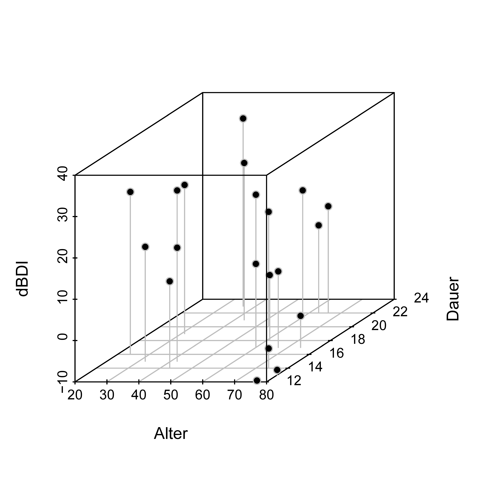
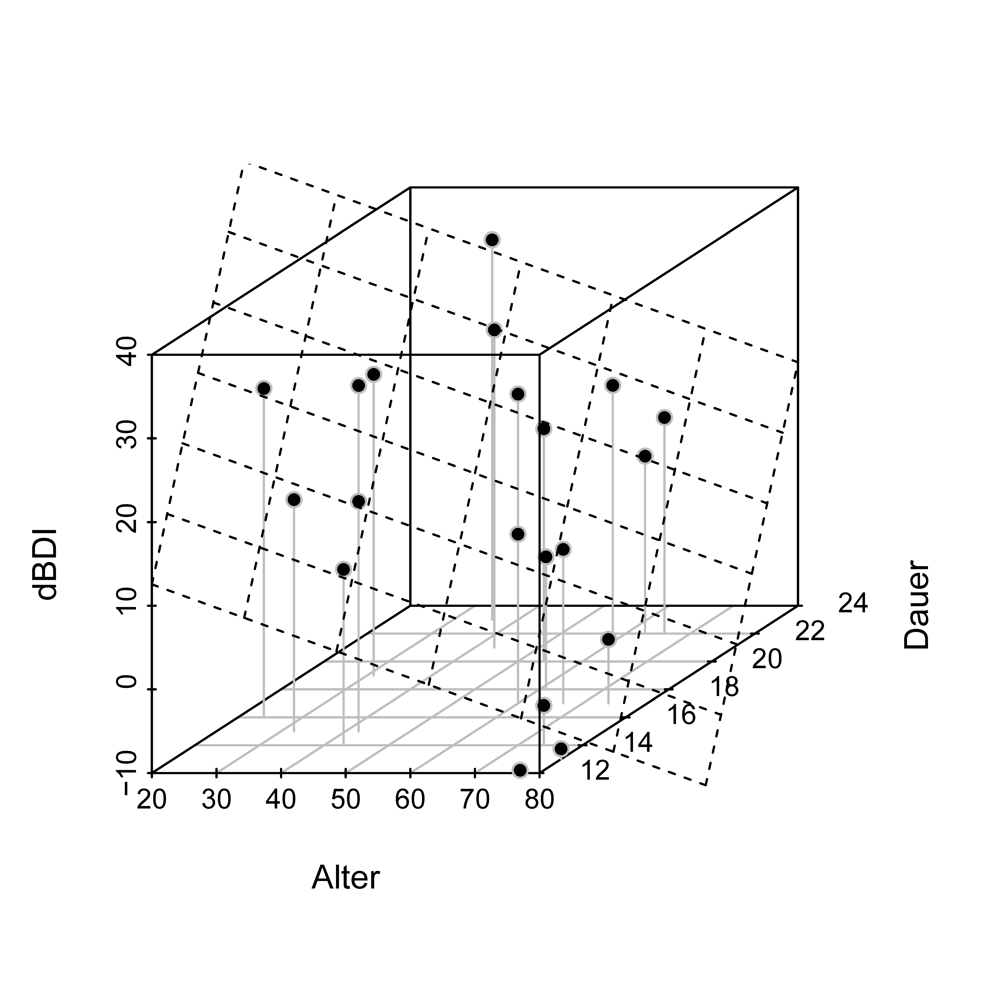

| Age | Duration | dBDI |
|---|---|---|
| 36 | 23 | 35.4 |
| 42 | 15 | 17.5 |
| 54 | 20 | 17.8 |
| 74 | 14 | -5.2 |
| 32 | 15 | 17.7 |
| 74 | 17 | -2.4 |
| 77 | 12 | -9.7 |
| 60 | 17 | 10.2 |
| 58 | 22 | 19.7 |
| 24 | 16 | 29.3 |
| 32 | 18 | 26.3 |
| 31 | 19 | 26.0 |
| 61 | 18 | 5.8 |
| 43 | 14 | 11.0 |
| 66 | 22 | 15.8 |
| 50 | 20 | 22.0 |
| 63 | 22 | 11.2 |
| 80 | 13 | -8.8 |
| 43 | 21 | 28.0 |
| 67 | 17 | 8.4 |
44 Multiple regression
44.1 Application scenario
Multiple regression is the generalization of simple linear regression to the context of more than one continuous independent variable. As in simple linear regression, one considers a univariate dependent variable whose values are measured on randomized experimental units. Depending on context, the independent variables in multiple regression are called regressors, predictors, covariates, features, or simply columns of the design matrix. Similar to simple linear regression, the goal of a multiple regression analysis is to quantify the explanatory potential of variations in the independent variables for variations in the dependent variable. Extending simple linear regression, particular attention is paid to determining the influence of individual independent variables on the dependent variable in the context of the variation of other independent variables. Another possible goal is the prediction of values of the dependent variable for values of the independent variables after estimating the corresponding beta weights from a training data set.
Application example
To illustrate some basic principles of multiple regression analysis, we mostly restrict ourselves in this chapter to the case of two continuous independent variables. As an application example, we consider the effect of psychotherapy on depressive symptoms as a function of patient age and therapy duration. Table 44.1 shows an example data set consisting of values from \(n=20\) patients. Here, age denotes patient age, duration denotes therapy duration, and dBDI denotes pre-post intervention BDI difference values.
Figure 44.1 visualizes the example data set, where the dBDI values are plotted as heights in three-dimensional space according to their coordinates in the age-duration plane. The visualization of multiple regression, especially with more than two independent variables, very quickly reaches its limits.

44.2 Model formulation
The multiple regression model is identical to the general form of the general linear model. For completeness, we give the following definition.
Definition 44.1 (Multiple regression model) Let \(y_i\), \(i=1,\ldots,n\), be the random variable that models the \(i\)th value of a dependent variable. The multiple regression model has the structural form \[ y_i=x_{i1}\beta_1+\cdots+x_{ip}\beta_p+\varepsilon_i \mbox{ with } \varepsilon_i \sim N(0,\sigma^2) \mbox{ i.i.d. for } i=1,\ldots,n \mbox{ and } \sigma^2>0, \] where \(x_{ij}\in\mathbb{R}\), \(1\leq i\leq n\) and \(1\leq j\leq p\), denotes the \(i\)th value of the \(j\)th independent variable. The independent variables are also called regressors, predictors, covariates, or features. With \[ x_i := (x_{i1},\ldots,x_{ip})^T \in \mathbb{R}^p \mbox{ and } \beta :=(\beta_1,\ldots,\beta_p)^T \in \mathbb{R}^p, \] the multiple regression model has the data-distribution form \[ y_i \sim N(\mu_i,\sigma^2) \mbox{ independently for } i=1,\ldots,n, \mbox{ where } \mu_i:=x_i^T\beta . \] In this context, \(x_i\in\mathbb{R}^p\) is also called the \(i\)th feature vector. Finally, the design-matrix form of the multiple regression model is \[ y=X\beta+\varepsilon \mbox{ with } \varepsilon \sim N(0_n,\sigma^2 I_n), \] where \[ y:=(y_1,\ldots,y_n)^T,\quad X:=(x_{ij})_{1\leq i\leq n,1\leq j\leq p}\in\mathbb{R}^{n\times p},\quad \beta:=(\beta_1,\ldots,\beta_p)^T\in\mathbb{R}^p, \] and \(\sigma^2>0\).
The following R code uses the multiple regression model from Definition 44.1 to generate the example data set shown in Table 44.1.
library(MASS) # multivariate normal distribution
set.seed(1) # reproducible data
n = 20 # number of data points
p = 3 # number of parameters
x_1 = round(runif(n,20,80)) # regressor values: age
x_2 = round(runif(n,12,24)) # regressor values: therapy duration
X = matrix(c(rep(1,n),x_1,x_2), nrow = n) # design matrix
I_n = diag(n) # identity matrix
beta = matrix(c(5,-.5,2), nrow = p) # beta-parameter vector
sigsqr = 10 # variance parameter
y = mvrnorm(1, X %*% beta, sigsqr*I_n) # one realization of an n-dimensional RV
D = data.frame(Alter = x_1, Dauer = x_2, dBDI = y) # data-frame formatting44.3 Model estimation
The multiple regression model provides a general insight into the meaning of the beta-parameter estimator \[ \hat{\beta}:=(X^T X)^{-1}X^T y. \] In particular, studying the beta-parameter estimator in the context of multiple regression makes clear that \(X^T y\) quantifies the covariation of the regressors with the data and that \(X^T X\) quantifies the covariation of the regressors with each other. The beta-parameter estimator can therefore be understood intuitively as regressor-data covariation normalized by regressor covariation. We illustrate this below for a multiple regression with an intercept regressor and two regressors for two independent variables. We show the form of the beta-parameter estimator once in terms of sample correlations (Theorem 44.1) and once in terms of partial sample correlations (Theorem 44.2).
Theorem 44.1 (Beta-parameter estimator and correlations) Consider a multiple regression model of the form \[ y=X\beta+\varepsilon,\quad \varepsilon\sim N(0_n,\sigma^2 I_n), \mbox{ with } X:=\begin{pmatrix} 1 & x_{11} & x_{12} \\ \vdots & \vdots & \vdots \\ 1 & x_{n1} & x_{n2} \end{pmatrix} \mbox{ and } \beta:= \begin{pmatrix} \beta_0\\ \beta_1\\ \beta_2 \end{pmatrix}. \] Then \[ \hat{\beta} = \begin{pmatrix} \bar{y}-\hat{\beta}_1\bar{x}_1-\hat{\beta}_2\bar{x}_2\\ \frac{r_{y,x_1}-r_{y,x_2}r_{x_1,x_2}}{1-r_{x_1,x_2}^2}\frac{s_y}{s_{x_1}}\\ \frac{r_{y,x_2}-r_{y,x_1}r_{x_1,x_2}}{1-r_{x_1,x_2}^2}\frac{s_y}{s_{x_2}} \end{pmatrix}, \] where, for the values \(y_i\), \(x_{i1}\), and \(x_{i2}\) with \(i=1,\ldots,n\), \(\bar{\cdot}\), \(s_{\cdot}\), and \(r_{\cdot,\cdot}\) denote the corresponding sample means, sample standard deviations, and sample correlations.
Proof. Recall first that the form of the beta-parameter estimator is equivalent to the system of normal equations (cf. Chapter 37), \[ \hat{\beta}=(X^T X)^{-1}X^T y \Leftrightarrow X^T X\hat{\beta}=X^T y. \] Writing out this system for the present special case gives \[ \begin{aligned} X^T X\hat{\beta} &= X^T y\\ \Leftrightarrow \begin{pmatrix} n & \sum_{i=1}^{n}x_{i1} & \sum_{i=1}^{n}x_{i2}\\ \sum_{i=1}^{n}x_{i1} & \sum_{i=1}^{n}x_{i1}^{2} & \sum_{i=1}^{n}x_{i1}x_{i2}\\ \sum_{i=1}^{n}x_{i2} & \sum_{i=1}^{n}x_{i2}x_{i1} & \sum_{i=1}^{n}x_{i2}^{2} \end{pmatrix} \begin{pmatrix} \hat{\beta}_0\\ \hat{\beta}_1\\ \hat{\beta}_2 \end{pmatrix} &= \begin{pmatrix} \sum_{i=1}^{n}y_i\\ \sum_{i=1}^{n}y_i x_{i1}\\ \sum_{i=1}^{n}y_i x_{i2} \end{pmatrix}. \end{aligned} \] Thus \[ \begin{aligned} n\hat{\beta}_0+\hat{\beta}_1\sum_{i=1}^{n}x_{i1}+\hat{\beta}_2\sum_{i=1}^{n}x_{i2} &=\sum_{i=1}^{n}y_i,\\ \hat{\beta}_0\sum_{i=1}^{n}x_{i1}+\hat{\beta}_1\sum_{i=1}^{n}x_{i1}^{2} +\hat{\beta}_2\sum_{i=1}^{n}x_{i1}x_{i2} &=\sum_{i=1}^{n}y_i x_{i1},\\ \hat{\beta}_0\sum_{i=1}^{n}x_{i2}+\hat{\beta}_1\sum_{i=1}^{n}x_{i1}x_{i2} +\hat{\beta}_2\sum_{i=1}^{n}x_{i2}^{2} &=\sum_{i=1}^{n}y_i x_{i2}. \end{aligned} \] The first equation immediately yields \[ \hat{\beta}_0=\bar{y}-\hat{\beta}_1\bar{x}_1-\hat{\beta}_2\bar{x}_2. \] Substituting this form of \(\hat{\beta}_0\) into the second component equation gives \[ \hat{\beta}_1\left(\sum_{i=1}^{n}x_{i1}^{2}-\bar{x}_1\sum_{i=1}^{n}x_{i1}\right) +\hat{\beta}_2\left(\sum_{i=1}^{n}x_{i1}x_{i2}-\bar{x}_2\sum_{i=1}^{n}x_{i1}\right) = \sum_{i=1}^{n}y_i x_{i1}-\bar{y}\sum_{i=1}^{n}x_{i1}. \] As in the proof of the theorem on the least-squares line (cf. Chapter 34), we have \[ \begin{aligned} \sum_{i=1}^{n}x_{i1}^2-\bar{x}_1\sum_{i=1}^{n}x_{i1} &=\sum_{i=1}^{n}(x_{i1}-\bar{x}_1)(x_{i1}-\bar{x}_1),\\ \sum_{i=1}^{n}x_{i1}x_{i2}-\bar{x}_2\sum_{i=1}^{n}x_{i1} &=\sum_{i=1}^{n}(x_{i1}-\bar{x}_1)(x_{i2}-\bar{x}_2),\\ \sum_{i=1}^{n}y_i x_{i1}-\bar{y}\sum_{i=1}^{n}x_{i1} &=\sum_{i=1}^{n}(y_i-\bar{y})(x_{i1}-\bar{x}_1). \end{aligned} \] Dividing by \(n-1\) and using the definitions of sample standard deviation, sample covariance, and sample correlation gives \[ \hat{\beta}_1 s_{x_1}^2+\hat{\beta}_2 c_{x_1,x_2}=c_{y,x_1}. \] Equivalently, \[ \hat{\beta}_1\frac{s_{x_1}}{s_y} +\hat{\beta}_2\frac{s_{x_2}}{s_y}r_{x_1,x_2}=r_{y,x_1}. \] Defining \[ b_j:=\hat{\beta}_j\frac{s_{x_j}}{s_y},\quad j=1,2, \] therefore yields \[ b_1+b_2 r_{x_1,x_2}=r_{y,x_1}. \] Analogously, by exchanging the subscripts, the third component equation yields \[ b_1 r_{x_1,x_2}+b_2=r_{y,x_2}. \] Solving the two equations gives \[ b_1=\frac{r_{y,x_1}-r_{y,x_2}r_{x_1,x_2}}{1-r_{x_1,x_2}^{2}} \quad\mbox{ and }\quad b_2=\frac{r_{y,x_2}-r_{y,x_1}r_{x_1,x_2}}{1-r_{x_1,x_2}^{2}}. \] Because \(\hat{\beta}_j=b_j s_y/s_{x_j}\) for \(j=1,2\), it follows that \[ \begin{aligned} \hat{\beta}_1 &=\left(\frac{r_{y,x_1}-r_{y,x_2}r_{x_1,x_2}}{1-r_{x_1,x_2}^{2}}\right)\frac{s_y}{s_{x_1}},\\ \hat{\beta}_2 &=\left(\frac{r_{y,x_2}-r_{y,x_1}r_{x_1,x_2}}{1-r_{x_1,x_2}^{2}}\right)\frac{s_y}{s_{x_2}}. \end{aligned} \] Together with the expression for \(\hat{\beta}_0\), this proves the result.
As an example, consider the sample-correlation form of the beta-parameter estimator for \(\beta_1\), \[ \hat{\beta}_1 = \frac{r_{y,x_1}-r_{y,x_2}r_{x_1,x_2}}{1-r_{x_1,x_2}^{2}}\frac{s_y}{s_{x_1}}. \] Among other things, one can see the following:
- Only if \(r_{x_1,x_2}=0\) and \(s_y=s_{x_1}\) does \(\hat{\beta}_1=r_{y,x_1}\) hold. In general, beta-parameter estimators in multiple regression are therefore not identical to the sample correlations between the corresponding regressor and the data.
- If \(r_{x_1,x_2}=\pm1\), \(\hat{\beta}_1\) is not defined. Perfectly correlated regressors therefore yield a model that cannot be estimated.
- The larger \(\left|r_{x_1,x_2}\right|\), the larger the term \(r_{y,x_2}r_{x_1,x_2}\) subtracted from \(r_{y,x_1}\). Pairwise correlations among regressors therefore reduce the beta-parameter estimate for a regressor.
- The larger \(\left|r_{y,x_2}\right|\), the larger the term \(r_{y,x_2}r_{x_1,x_2}\) subtracted from \(r_{y,x_1}\). In addition to pairwise correlations among regressors, a high sample correlation of another regressor with the data also reduces the value of a beta-parameter estimator.
- For identical correlations and unchanged regressor standard deviation, \(\hat{\beta}_1\) increases with \(s_y\). Intuitively, a regressor receives a larger beta-parameter estimate if it explains more data variability under the same correlation structure.
In summary, these points show that the value of a beta-parameter estimator for a regressor in a multiple regression model can only be interpreted in the context of the correlation structure of the other regressors with itself and with the data. It therefore does not represent a model-independent absolute contribution of a specific regressor to the explanation of the data.
The following theorem relates multiple regression to partial correlations between independent and dependent variables in the scenario considered here.
Theorem 44.2 (Beta-parameter estimator and partial correlations) Consider a multiple regression model of the form \[ y=X\beta+\varepsilon,\quad \varepsilon\sim N(0_n,\sigma^2 I_n), \mbox{ with } X:= \begin{pmatrix} 1 & x_{11} & x_{12}\\ \vdots & \vdots & \vdots\\ 1 & x_{n1} & x_{n2} \end{pmatrix} \mbox{ and } \beta:= \begin{pmatrix} \beta_0\\ \beta_1\\ \beta_2 \end{pmatrix}. \] Then \[ \hat{\beta} = \begin{pmatrix} \bar{y}-\hat{\beta}_1\bar{x}_1-\hat{\beta}_2\bar{x}_2\\ r_{y,x_1\backslash x_2}\sqrt{\frac{1-r_{y,x_2}^{2}}{1-r_{x_1,x_2}^{2}}}\frac{s_y}{s_{x_1}}\\ r_{y,x_2\backslash x_1}\sqrt{\frac{1-r_{y,x_1}^{2}}{1-r_{x_2,x_1}^{2}}}\frac{s_y}{s_{x_2}} \end{pmatrix}, \] where, for \(1\leq k,l\leq2\) and \(i=1,\ldots,n\),
- \(r_{y,x_k\backslash x_l}\) is the partial sample correlation of the \(y_i\) and \(x_{ik}\) given the \(x_{il}\),
- \(r_{y,x_k}\) is the sample correlation of the \(y_i\) and \(x_{ik}\), and
- \(r_{x_k,x_l}\) is the sample correlation of the \(x_{ik}\) and \(x_{il}\).
Proof. We consider \(\hat{\beta}_1\); the result for \(\hat{\beta}_2\) follows by exchanging the indices. By Theorem 44.1, \[ \hat{\beta}_1 = \frac{r_{y,x_1}-r_{y,x_2}r_{x_1,x_2}}{1-r_{x_1,x_2}^{2}}\frac{s_y}{s_{x_1}}. \] Furthermore, in Chapter 43 we saw that, under the assumption of a multivariate normal distribution of \(y,x_1,x_2\), an estimator of the partial correlation of \(y\) and \(x_1\) given \(x_2\) is \[ r_{y,x_1\backslash x_2} = \frac{r_{y,x_1}-r_{y,x_2}r_{x_1,x_2}} {\sqrt{1-r_{y,x_2}^{2}}\sqrt{1-r_{x_1,x_2}^{2}}}. \] It follows that \[ \begin{aligned} \hat{\beta}_1 &= \frac{r_{y,x_1}-r_{y,x_2}r_{x_1,x_2}}{1-r_{x_1,x_2}^{2}}\frac{s_y}{s_{x_1}}\\ &= r_{y,x_1\backslash x_2} \frac{\sqrt{1-r_{y,x_2}^{2}}\sqrt{1-r_{x_1,x_2}^{2}}}{1-r_{x_1,x_2}^{2}} \frac{s_y}{s_{x_1}}\\ &= r_{y,x_1\backslash x_2} \sqrt{\frac{1-r_{y,x_2}^{2}}{1-r_{x_1,x_2}^{2}}} \frac{s_y}{s_{x_1}}. \end{aligned} \] This proves the expression for \(\hat{\beta}_1\); the expression for \(\hat{\beta}_2\) follows analogously.
In general, \[ \hat{\beta}_k \neq r_{y,x_k\backslash x_l}. \] Beta-parameter estimators are therefore generally not partial sample correlations. However, the two coincide in special cases, for example when the standard deviations are equal and the relevant correction factor in Theorem 44.2 is one. This may occur when one regressor explains the data very well and the other regressor is very different from the first one, or when the relevant sample correlations are equal in absolute value. In applications, however, such identities are usually special cases rather than the rule.
The following R code demonstrates the equivalence of the matrix notation of the beta-parameter estimator and its representation by sample means, sample correlations, sample standard deviations, and partial sample correlations.
D = read.csv("./_data/511-multiple-regression.csv") # read data
y = D$dBDI # dependent variable
n = length(y) # number of data points
X = matrix(c(rep(1,n), D$Alter, D$Dauer), nrow = n) # design matrix
p = ncol(X) # number of parameters
beta_hat = solve(t(X) %*% X) %*% t(X) %*% y # beta-parameter estimator
eps_hat = y - X %*% beta_hat # residual vector
sigsqr_hat = (t(eps_hat) %*% eps_hat) /(n-p) # variance-parameter estimator
# Beta-parameter estimator from partial correlations and correlations
y12 = cbind(y,X[,2:3]) # y,x_1,x_2 matrix
bars = apply(y12, 2, mean) # sample means
s = apply(y12, 2, sd) # sample standard deviations
r = cor(y12) # sample correlations
pr = matrix(NA, 3, 3) # partial sample correlations
diag(pr) = 1
pr[1,2] = pr[2,1] = (r[1,2] - r[1,3]*r[2,3]) / sqrt((1-r[1,3]^2)*(1-r[2,3]^2))
pr[1,3] = pr[3,1] = (r[1,3] - r[1,2]*r[3,2]) / sqrt((1-r[1,2]^2)*(1-r[3,2]^2))
pr[2,3] = pr[3,2] = (r[2,3] - r[2,1]*r[3,1]) / sqrt((1-r[2,1]^2)*(1-r[3,1]^2))
beta_hat_1 = pr[1,2]*sqrt((1-r[1,3]^2)/(1-r[2,3]^2))*(s[1]/s[2]) # beta_hat_1
beta_hat_2 = pr[1,3]*sqrt((1-r[1,2]^2)/(1-r[3,2]^2))*(s[1]/s[3]) # beta_hat_2
beta_hat_0 = bars[1] - beta_hat_1*bars[2] - beta_hat_2*bars[3] # beta_hat_0Correlations r(dBDI,Age), r(dBDI,Duration), r(Age,Duration) : -0.87 0.64 -0.22
Partial correlations r(dBDI,Age|Duration), r(dBDI,Duration|Age) : -0.97 0.92
beta_hat GLM estimator : 11.44 -0.57 1.85
beta_hat from partial correlation : 11.44 -0.57 1.85Figure 44.2 visualizes the example data set together with the regression plane defined by the beta-parameter estimator, \[ f_{\hat{\beta}}:\mathbb{R}^2\rightarrow\mathbb{R},\quad (x_1,x_2)\mapsto f_{\hat{\beta}}(x_1,x_2):= \hat{\beta}_0+\hat{\beta}_1x_1+\hat{\beta}_2x_2 . \]

44.4 Model evaluation
The general theory of T and F statistics provides many possibilities for inferentially evaluating different hypotheses in the context of multiple regression. For the application example, the following contrast-weight vectors and null and alternative hypotheses may be of initial interest: \[ c:=\begin{pmatrix}0\\1\\0\end{pmatrix} \Leftrightarrow H_0:\beta_2=0,\ H_A:\beta_2\neq0 \mbox{ and } c:=\begin{pmatrix}0\\0\\1\end{pmatrix} \Leftrightarrow H_0:\beta_3=0,\ H_A:\beta_3\neq0. \] Rejecting the respective null hypothesis would imply inferential evidence for an effect of patient age or therapy duration on the pre-post BDI difference in the context of the presence of the other independent variable and the intercept term.
Furthermore, the following contrast-weight vector with the following null and alternative hypotheses may be of interest: \[ c:=\begin{pmatrix}0\\1\\-1\end{pmatrix} \Leftrightarrow H_0:\beta_2-\beta_3=0,\ H_A:\beta_2-\beta_3\neq0. \] In this case, rejecting the null hypothesis would imply inferential evidence for a differential influence of patient age and therapy duration, with the sign of the T statistic indicating whether patient age or therapy duration has the stronger effect.
The following R code evaluates the T tests just described.
D = read.csv("./_data/511-multiple-regression.csv") # data set
y = D$dBDI # dependent variable
n = length(y) # number of data points
X = matrix(c(rep(1,n), D$Alter, D$Dauer), nrow = n) # design matrix
p = ncol(X) # number of parameters
beta_hat = solve(t(X) %*% X) %*% t(X) %*% y # beta-parameter estimator
eps_hat = y - X %*% beta_hat # residual vector
sigsqr_hat = (t(eps_hat) %*% eps_hat) /(n-p) # variance-parameter estimator
C = cbind(diag(p), matrix(c(0,1,-1), nrow = 3)) # contrast-weight vectors
ste = rep(NaN, ncol(C)) # contrast standard errors
tee = rep(NaN, ncol(C)) # T statistics
pvals = rep(NaN, ncol(C)) # p values
for(i in 1:ncol(C)){ # contrast iterations
c = C[,i] # contrast-weight vector
t_num = t(c)%*%beta_hat # numerator of the T statistic
ste[i] = sqrt(sigsqr_hat*t(c)%*%solve(t(X)%*%X)%*%c) # contrast standard error
tee[i] = t_num/ste[i] # T statistic
pvals[i] = 2*(1 - pt(abs(tee[i]),n-p)) # p value
} Estimate Std. Error t value Pr(>|t|)
(Intercept) 11.44 4.20 2.73 0.01
Age -0.57 0.04 -16.00 0.00
Duration 1.85 0.19 9.97 0.00
Age-Duration -2.42 0.18 -13.37 0.00The example data set therefore provides inferential evidence for a negative association between therapy success and patient age and a positive association between therapy success and therapy duration. The difference between the two effects is also pronounced.
More globally, one could use an F test based on a model partition with \(p_0:=1\) to ask whether the data support the assumption that patient age and therapy duration contribute at all to explaining the variation in pre-post BDI difference values. The following R code evaluates this F test.
D = read.csv("./_data/511-multiple-regression.csv") # data set
y = D$dBDI # dependent variable
n = length(y) # number of data points
X = matrix(c(rep(1,n), D$Alter, D$Dauer), nrow = n) # full-model design matrix
p = ncol(X) # number of full-model parameters
p_0 = 1 # number of reduced-model parameters
p_1 = p - p_0 # number of additional full-model parameters
X_0 = X[,1:p_0] # reduced-model design matrix
beta_hat_0 = solve(t(X_0)%*%X_0)%*%t(X_0)%*%y # reduced-model beta estimator
beta_hat = solve(t(X) %*%X )%*%t(X) %*%y # full-model beta estimator
eps_hat_0 = y - X_0 %*% beta_hat_0 # reduced-model residual vector
eps_hat = y - X %*% beta_hat # full-model residual vector
eh0_eh0 = t(eps_hat_0) %*% eps_hat_0 # reduced-model RSS
eh_eh = t(eps_hat) %*% eps_hat # full-model RSS
sigsqr_hat = eh_eh/(n-p) # full-model variance estimator
f = ((eh0_eh0-eh_eh)/p_1)/sigsqr_hat # F statistic
pval = 1 - pf(f,p_1,n-p) # p valueF-statistic: 223.7 on 2 and 17 DF p-value: 6.17950135506362e-13The example data set therefore contains clear evidence that patient age and therapy duration contribute to explaining the variation in pre-post BDI difference values across patients.
A direct implementation of the analysis above is provided by the interaction of the R functions lm() and summary(), as demonstrated by the following R code.
Call:
lm(formula = dBDI ~ Alter + Dauer, data = D)
Residuals:
Min 1Q Median 3Q Max
-4.9474 -2.0549 0.6748 1.9590 3.7926
Coefficients:
Estimate Std. Error t value Pr(>|t|)
(Intercept) 11.43949 4.19776 2.725 0.0144 *
Alter -0.57162 0.03573 -15.997 1.11e-11 ***
Dauer 1.85132 0.18577 9.966 1.63e-08 ***
---
Signif. codes: 0 '***' 0.001 '**' 0.01 '*' 0.05 '.' 0.1 ' ' 1
Residual standard error: 2.612 on 17 degrees of freedom
Multiple R-squared: 0.9634, Adjusted R-squared: 0.9591
F-statistic: 223.7 on 2 and 17 DF, p-value: 6.179e-1344.5 Literature notes
The modern history of multiple regression is often anchored in the work of Legendre (1805) and Gauss (1809) on the calculation of planetary orbits. Today’s theory of multiple regression is very broad, so this chapter can only provide a first impression of its character. Further insights are offered, for example, by Draper & Smith (1998), Hocking (2003), and Fox & Tishby (2016).
Draper, N., & Smith, H. (1998). Applied Regression Analysis. Wiley-Interscience.
Fox, R., & Tishby, N. (2016). Minimum-information LQG control part I: Memoryless controllers. 5610–5616. https://doi.org/10.1109/CDC.2016.7799131
Gauss, C. F. (1809). Theoria Motus Corporum Coelestium in Sectionibus Conicis Solem Ambientium. Cambridge University Press.
Hocking, R. (2003). Methods and Applications of Linear Models - Regression and the Analysis of Variance. Wiley.
Legendre, A. M. (1805). Nouvelles methodes pour la determination des orbites des cometes. Didot Paris.